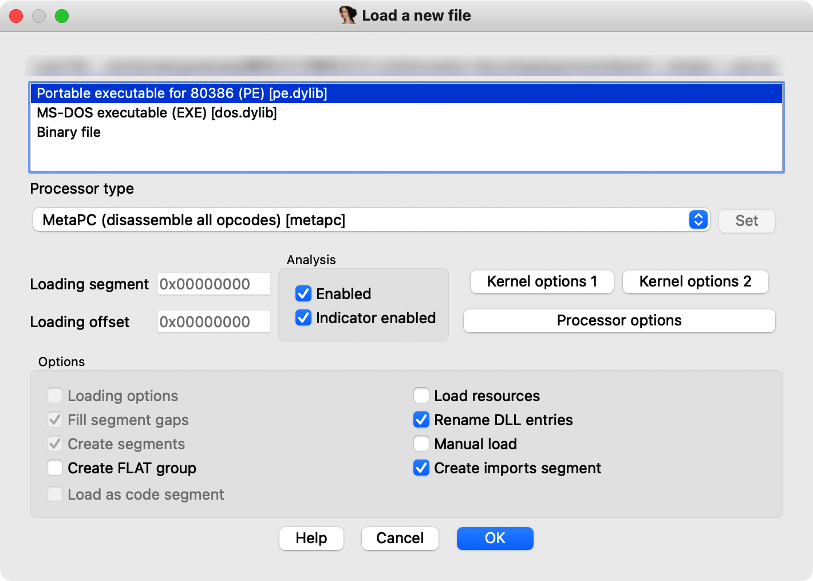
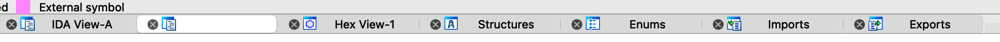

C++反汇编¶
1 IDA工具使用¶
ida属于一个静态分析的反汇编工具，他不同与OD那样的动态分析（调试器加载程序，并以调试模式运行起来，分析者可以在程序的执行过程中观察程序的执行流程和计算结果）。而在实际分析过程中，你可能会遇到：设备环境不兼容、病毒程序、某软件的一模块无法单独运行...这时候你就需要静态分析的工具直接做反汇编（将二进制代码到汇编代码的翻译过程）。
1.1 基础使用方法¶
1.1.1 加载分析文件¶
加载文件后，ida会询问你的分析方式：

-
Portable executable for 80386 (PE) [pe.dylib]
-
分析一个PE格式文件
-
可移植性可执行文件（英语：Portable Executable，缩写为PE）是一种用于可执行文件、目标文件和动态链接库的文件格式，主要使用在32位和64位的Windows操作系统上。“可移植的”是指该文件格式的通用性，可用于许多种不同的操作系统和体系结构中。PE文件格式封装了Windows操作系统加载可执行程序代码时所必需的一些信息。这些信息包括动态链接库、API导入和导出表、资源管理数据和线程局部存储数据。在Windows NT操作系统中，PE文件格式主要用于EXE文件、DLL文件、.sys（驱动程序）和其他文件类型。可扩展固件接口（EFI）技术规范书中说明PE格式是EFI环境中的标准可执行文件格式。开头为DOS头部。
> | [扩展名](https://zh.m.wikipedia.org/wiki/扩展名) | `.acm, .ax, .cpl, .dll, .drv, .efi, .exe, .mui, .ocx, .scr, .sys, .tsp` | > | :----------------------------------------------------------- | ------------------------------------------------------------ | > | [互联网媒体类型](https://zh.m.wikipedia.org/wiki/互联网媒体类型) | `application/vnd.microsoft.portable-executable` | > | 开发者 | [Microsoft](https://zh.m.wikipedia.org/wiki/Microsoft) | > | 格式类型 | [二进制](https://zh.m.wikipedia.org/wiki/二进制文件)[可执行文件](https://zh.m.wikipedia.org/wiki/可执行文件)、[目标代码](https://zh.m.wikipedia.org/wiki/目标代码)、[函式库](https://zh.m.wikipedia.org/wiki/函式庫) | > | 扩展自 | [DOS MZ可执行文件](https://zh.m.wikipedia.org/wiki/DOS_MZ可执行文件) [COFF](https://zh.m.wikipedia.org/wiki/COFF) | > PE格式是由Unix中的[COFF](https://zh.m.wikipedia.org/wiki/COFF)格式修改而来的。在Windows开发环境中，PE格式也称为**PE/COFF**格式。
-
-
MS-DOS executable (EXE) [dos.dylib]
-
分析文件为DOS控制台下的文件
-
DOS（/ d ɒ s /，/ d ɔː s /[ 1]）是“磁盘操作系统”的独立于平台的首字母缩写词，后来成为IBM PC 兼容机上基于磁盘的操作系统的常用缩写。[2] DOS 主要由Microsoft的MS-DOS和名称为IBM PC DOS的更名版本组成，两者均于 1981 年推出。后来其他制造商的兼容系统包括DR DOS（1988 年）、ROM-DOS（1989 年） )、PTS-DOS (1993) 和自由操作系统(1998)。1981 年至 1995 年间，MS-DOS 主导了 IBM PC 兼容市场。
> 许多其他操作系统也使用首字母缩写词“DOS”，从 1966 年的大型机[DOS/360开始。其他包括](https://en.wikipedia.org/wiki/DOS/360_and_successors)[Apple DOS](https://en.wikipedia.org/wiki/Apple_DOS)、[Apple ProDOS](https://en.wikipedia.org/wiki/Apple_ProDOS)、[Atari DOS](https://en.wikipedia.org/wiki/Atari_DOS)、[Commodore DOS](https://en.wikipedia.org/wiki/Commodore_DOS)、[TRSDOS](https://en.wikipedia.org/wiki/TRSDOS)和[AmigaDOS](https://en.wikipedia.org/wiki/AmigaDOS)。
-
-
Binary file
- 分析文件为一个二进制文件
1.1.2 视图窗口介绍¶

- IDA View-A：分析视图窗口，用于显示分析结果，可选用流程图或代码形式
- HEX View-1：二进制视图窗口，打开文件二进制信息。
- Imports：分析文件中的导入函数信息窗口。
- Exports：分析文件中的导入函数信息窗口。
- Enums：添加枚举信息窗口。
- Structures：添加结构体的信息窗口。
1.1.3 查看分析结果和一些操作¶
IDA默认视图为流程视图，空格转换成代码形式。
反汇编代码展示出来后，双击标号即可跟踪到该数据的定义处，函数也是一样。ESC返回跟进出。
IDA可以通过SIG文件进行函数名识别，具体流程这里先不做介绍。
2 基本数据类型的表现形式¶
由于二进制数不方便显示和阅读，因此内存中的数据采用十六进制数显示，每一个字节由两个十六进制数组成，在进制转化中一个十六进制数可以用4个二进制数表示，每个二进制数表示一位，因此一个字节在内存中占八位。
2.1 整数类型¶
2.1.1 无符号整数¶
在内存中，无符号整数的所有位都用来表示数值。以unsigned int为例，此类型的变量在内存中占4字节，由8个十六进制数组成。取值范围为0x00000000~0xFFFFFFFF。
- 当此类型不足32位，用0来填充剩余高位。
- 转化中16进制数后，内存中以“小尾形式”存放，注意按字节存放（2个十六进制位）。（也成小端方式）
- 0x12345678 - > 78 56 34 12
- 在其他计算机系统中，也有大尾形式。
- 不分正负，所以正数范围是补码的一倍。
2.1.2 有符号整数¶
用最高位来表示符号位，0+1-。少一位表示数值，所以范围0x80000000~0x7FFFFFFF。十进制下-2147482648~2147482647。
在有符号整数中，正数的表示区间为:0x00000000 ~ 0x7FFFFFFF;负数的表示区间为: 0x80000000 ~ 0xFFFFFFFF。
- 负数在内存中都是以补码形式存放的，补码的规则是用0减去这个数的绝对值，也可以简单地表达为对这个数值取反加1。
- 按照转换规则，内存中存放的十六进制数为一个补码，需转换成真值再进行解释。0减去
0xFFFFFFFF后，或者对0xFFFFFFFF取反加1，都可以得到真值-1。 - 值得一提的是，对于4字节补码，
0x8000000所表达的意义可以是负数0，也可以是0x80000001减去1。由于又的正负值是相等的，没有必要还来个负数0，因此，也就把这个值的意义规定为0x80000001减去1，这样0x80000000也就成为4字节负数的最小值了。这也是为什么有符号整数的取值范围中，负数区间总是比正数区间多一个最小值的原因。